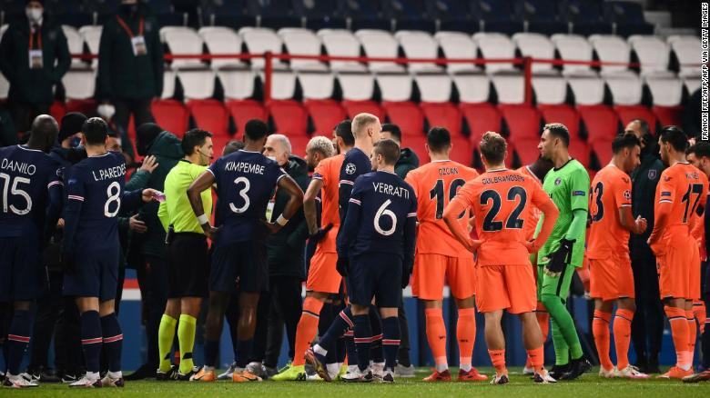

New officials appointed for Champions League match suspended after alleged racist incident
(NWT) European football's governing body UEFA has announced that a new refereeing team will officiate the resumption of the Champions League match between Paris Saint-Germain and Istanbul Basaksehir, which was marred by alleged racism.
Tuesday's game was suspended after both teams walked off the pitch in protest after an official was accused of making a racist comment towards Basaksehir assistant coach Pierre Webo, who is Cameroonian.
After being shown a red card by the match referee, Webo could be heard over the broadcast of French channel RMC Sport repeatedly asking: "Why [did] you say negro?" and pointing at fourth official Sebastian Colţescu.
UEFA told CNN that Webo's red card has been put on hold as it investigates the incident.
The match was suspended inside the opening 15 minutes and UEFA announced it would be concluded on Wednesday at the Parc des Princes in Paris.
UEFA told CNN that Dutch referee Danny Makkelie will lead the new team of officials and will be supported by fellow countryman Mario Diks and Poland's Marcin Boniek.
Poland's Bartosch Frankowsky will be the new fourth official whilst Italy's Marco Di Bello and Maurizio Mariani will oversee VAR.
